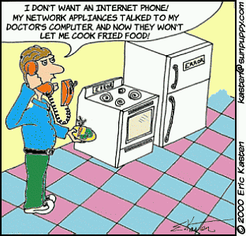
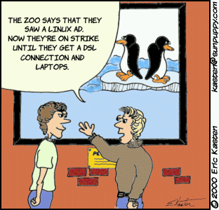

[Introduction and conclusion written by the LG Editor.]
"Tuxedo Tails" is a new series of single-panel cartoons Eric Kasten is drawing for Linux Gazette. I asked Eric how he builds his cartoons and how much he uses Linux. He replied, "I pretty much use Linux for everything that I do electronically any more (other than my tax software and occasion forays into Photoshop or Illustrator). The drawing is still done largely by pen and ink and then scanned and colorized and assembled. I mostly use the Gimp for interactive work and ImageMagick for scripts and such."


Eric also draws a multi-panel strip called Sun Puppy.
It's about--you guessed it--puppies. Read the strip at
http://www.sunpuppy.com. Most of the
cartoons are not computer related, but two of the funniest computer-related
episodes were
May 22nd
and
May 24th. The second one may or may not remind you of biff,
the program that alerts you when mail has arrived.